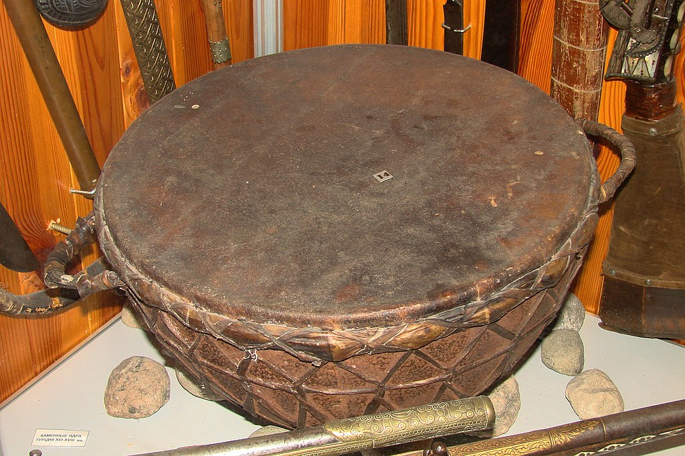
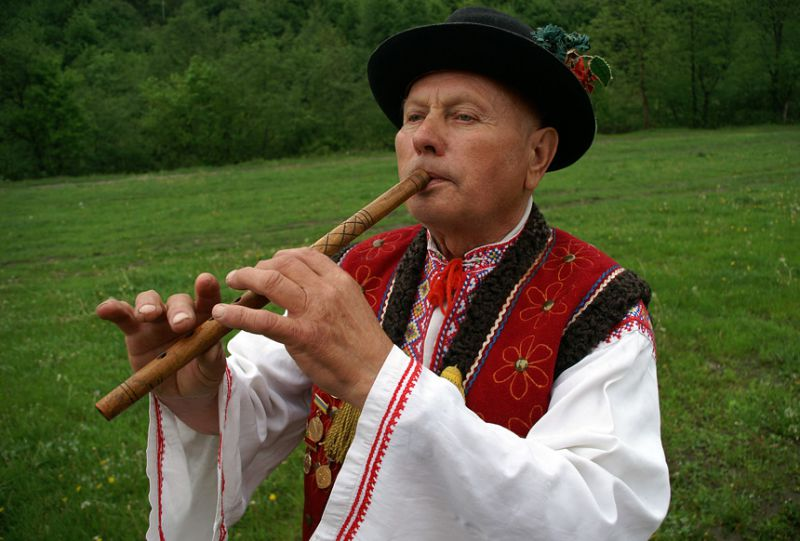
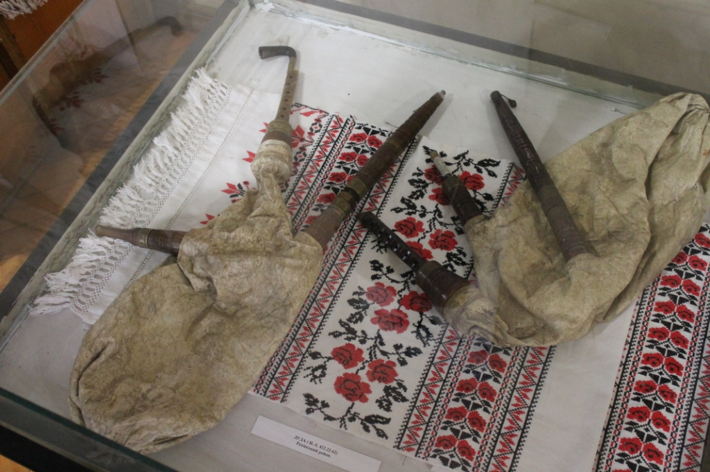
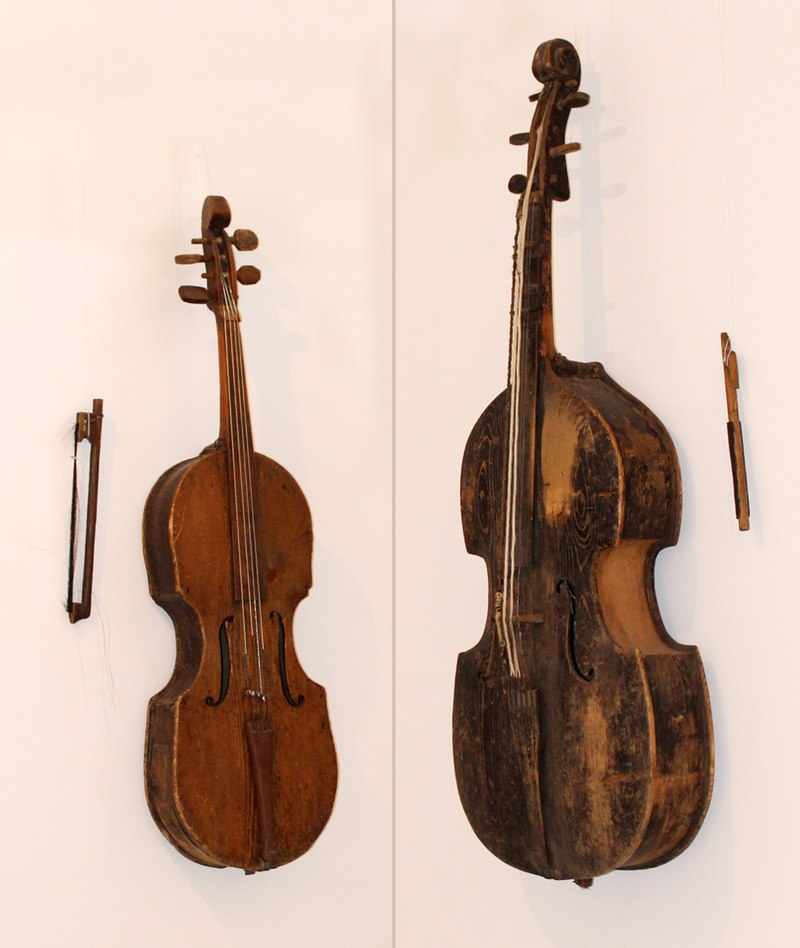

Українські народні музичні інструменти, про які ви могли не знати
"Якщо ти хочеш зрозуміти, як живе народ,- послухай його музику"
Українці здавна висловлювали свої емоції, жалі, радощі через музику. Нашій культурі властива різноманітність музичних інструментів — кожен на різний випадок та до окремих свят і подій.
Деякі інструменти кожен з нас знає добре, як то бандуру чи трембіту. Це ж підбірка народних інструментів, які не такі популярні. Але вони відіграли та продовжують відігравати важливу роль в історії української музики.
До речі, багато з них згадуються у першому епізоді документального серіалу спалах . Якщо ви ще не дивилися – радимо це зробити .
Тулумбас
Тулумбаси, або литаври — казаноподібні барабани, що були відомі в Європі з ХІV століття. В Україні вони стали незамінним інструментом для козаків у культурному й політичному житті січей.
Уявіть поле бою, на якому брязкіт зброї та крики унеможливлюють координацію війська. Тут і допомагає тулумбас, звук якого перекриває шум і задає темп наступу або дає команду повертати назад. Часто козаки здобували тулумбаси як трофеї у війнах, але й самі їх виготовляли — натягували тонку шкіру поверх казанів. Історики вважають, що у найбільші барабани могли бити одразу восьмеро музикантів — довбишів.
Флояра
Якщо вам траплялись фільми про Карпати або гуцулів, ви точно чули звуки флояри — це один із найулюбленіших духових інструментів жителів українських гір.
From a long time ago, it was made independently by shepherds from bell or oak and decorated with carvings with various plant motifs according to the region. Floyar motifs have long accompanied happy and sad Hutsul events: evening parties, weddings, funerals.
Depending on the size, floyars emit a different range of sounds. The largest floyars, about a meter long, are called grandfather's and they are considered the most successful "for singing", that is, for performing instrumental suites.
Дуда
Напевно, ви знаєте про такий шотландський народний інструмент, як волинка. А от у карпатських регіонах аналог цього інструменту називається дуда , або коза. Він зʼявився на 200 років раніше, ніж на Британських островах.
Виготовляють дуду за складною технологією, що потребує високого рівня майстерності, прикрашають деревʼяною головою кози, яка є неодмінним атрибутом народного свята Маланки на заході України. Дослідники вважають, що дуда чудом збереглась до наших часів, адже її виготовлення дуже кропітке й вимагає неабиякої відданості — всю зиму майстри зазвичай присвячували створенню музичних інструментів.
Басоля
Басоля — це струнно-смичковий інструмент з давньою історією. Походить вона від гудища, трьохструнного інструменту часів Київської Русі, на якому грали скоморохи під час народних забав. Сучасна басоля схожа на віолончель, має чотири струни, а грають на ній за допомогою смичка, тримаючи інструмент під нахилом або на колінах, як гітару. Зараз почути басолю можна здебільшого в народних ансамблях троїстих музик.
Підтримай нашу роботу фінансово на Patreon чи прямим донатом — зараз нам це потрібно.
- Фестиваль «Червона Рута-1989»
- Документальний серіал "Спалах" про нову українську культуру